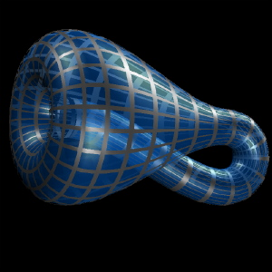

从第四度空间迈向无色界的追寻
冯冯
君之剑 / 誊录
 佛经提及宇宙中许多“界”（Dimension），与“世界”，大多数都不是我们欲界的。我们的见识受到了肉体眼耳口鼻的有限感受识力，无法接触得到色界以上的无色界。我们看不见听不到摸不着的，就认为是并不存在的，其实那是虚妄的错觉。我们的智识和思想，受到自我禁锢于狭小幽暗的井中，使我们草率地否定了一切我们未知的存在。
佛经提及宇宙中许多“界”（Dimension），与“世界”，大多数都不是我们欲界的。我们的见识受到了肉体眼耳口鼻的有限感受识力，无法接触得到色界以上的无色界。我们看不见听不到摸不着的，就认为是并不存在的，其实那是虚妄的错觉。我们的智识和思想，受到自我禁锢于狭小幽暗的井中，使我们草率地否定了一切我们未知的存在。
假如你攀上运动场中央的一支旗杆的顶上，你居高临下，你向上攀登的方向，是垂直向上的，与运动场地面的“长”与“宽”均成为九十度的直角，是不是？
假如运动场另外还有一支与“长”、“宽”、“高”三者，都成九十度直角关系的旗杆竖立着，你正在攀上去，你就明白你很可能是向着第四度空间进入了！
这些话说来简单容易，但并不是那么容易为一般人了解，因为一般人不能以其肉眼视力看得见第四度空间的形状。
第四度空间（界），一向被认为是幽灵般抽象的数学观念而已，并无具体的形相。现在，电子计算机(电脑)绘图学(Computer Graphics)已经能够将第四度空间绘出呈现在我们视线前面。
第四度空间，其实也并不那么太神秘。日常我们已经接触了第四度空间而不自知。比方说，我们看彩色电视画面时，突然在画面人物转变时，会出现变形幻影，那就是第四度空间之一瞥。
当代最先进的科学家群，例如医学家、海洋学家，甚至于社会学家，有很多人已经致力于第四度空间的研究与应用。医学已经进入第四度空间的医疗方法，更是值得世人注视。
我们的视界不能进入三度空间以上的界，但是计算机、电脑可以，运用电脑来呈现第四度空间，是一门崭新的学问。成就最高者，当推美国布朗大学（Brown University）数学系主任汤玛士。班卓夫博士（Thomas Banchoff）能很成功地运用电脑呈现出第四空间的影象，让肉眼可以看得见。
他喜欢称第四度空间为“最接近我们的邻界”。
班卓夫博士的突破性视觉成就，就是运用电脑把第四度空间的存在，绘制成拟态的视觉画面电影，让肉眼可以看得见一向认为无可能呈现的抽象观念，或数学几何方程式才能表现出来的第四度空间存在物。举例说，班卓夫博士的超时代影片之一，放映时，让肉眼看见一座形似实质的蓝色半球体，在一片黑色背景上慢慢回旋。然后，半球形突然变形，现出前所未见亦不可想象的奇象；它的弧形缩小了，好象自己吞噬自己似的，一直萎缩，直到变成一个小小蓝点为止。不久，蓝色光点骤涨，成为一个三尖形，后来遂变为一个等边三角立体（形如金字塔），不久又自行变回原有半圆形。
这种怪异的奇观，到底是怎么一回事？又跟第四度空间有什么关连呢？
班卓夫指出：“刚才所见电脑绘拟的视象，并非存在于第四度空间内的真正物象，只是理论第四度空间（Theoretical Fourth Dimension）所投射的三度空间影象而已。” 我们都知道，长、宽、高，是我们熟悉的三度空间。而数学家则称第四速空间为“超空间”（Hyper-Space）。
班卓夫的科学新发现，具有重大的意义。假如说，现在有一群具有若干智慧的“第二度空间”生命，他们住在一个小孩的三度空间的游戏室内的一堵墙壁上。他们是二度空间的生物，只有长与宽，而没有高；在我们三度空间的人类来看他们（假如看得见），就会觉得他们是平平扁扁的，因为他们只有长与宽，而没有高，他们根本不知道“高”为何物，自然就不能想象出“三度空间”是什么意义了。
假如说，那个小孩现在进入他的游戏室内，用灯光照着墙壁，把他自己的手影投射在墙上。那么，墙上的那批二度空间生物看见小孩的手影在他们身上遮盖又隐去，忽出现忽消失，这批二度空间生物可不是吓得半死？再也猜不透想不通忽来忽去的手影是什么东西，怎么会这样移动来去的呢？又会变形的呀！一下子胖，一下子瘦，忽然是小狗头形，忽而猫头，忽而天鹅……是些什么妖魔鬼怪在作崇？哪知这只不过是三度空间一个小孩在做手影游戏所造成的幻象？
假定在第四度空间里面，有一个小孩，向着我们的三度空间投射灯光手影，我们岂不是一如二度空间的那群生物一样，被吓得魂飞魄散？我们只认识三度空间的一切事物，我们毫无所知于超过三度空间以上的“超空间”的任何情形。
第四度空间的“存在物”或“生命”，所表现的任何变化，都是打破我们三度空间内的一切物理法则，都跟我们学过的定律不符──你瞧！看起来像是实质的半圆形，竟会自己突然缩小消失，忽然重现，变为三角立体形，又忽然消失，再重现原来的半圆形，这不是鬼怪吗？
在三度空间的我们，对于三度以上的空间，的确太无知了，就如二度空间的生物对我们三度空间小孩的手影一样无知！
西方人对于“超空间”的追寻，其实并非始自今日。远在公元一八八四年间，英国科学幻想作家艾特温·阿博特（Edwin Abbott）的名著《平坦世界》（Flatland）就已经提出对超空间的探讨。这本一百年前的科学幻想小说先驱，至今仍未褪色，其观念依然站在时代前面。多佛公司(Dover)再版此书，仍是当前畅销书之一，这本小说对于后来一九五零年至六零年代盛极一时的科学幻想小说作者们有很大的启示作用。
《平坦世界》（Flatland）
《平坦世界》书内描写一个二度空间的世界的生命与环境。有一天，从三度空间世界来了一个圆球形生物，进入二度空间的“平坦世界”，引起了该处各生物的惊慌。平坦世界公民之一，一位发言者说：
“我巴不得立刻就把这个侵入者驱逐出境！”这个发言者是一个平面的四方形，它质问闯入者：
“你说你是从三度空间来的？三度空间在哪里？是什么样子？怎么我一些也不知道？”
来客（三度空间圆球）说：“不错，我是从三度空间来的，它就是在上面，也在下面。”
平面四方形说：“老天爷！你一定是指南和北了！”圆球：“完全不是这个意思，我是说你的上面和下面，这是你看不见的，因为你是平面的，你旁边又没有眼睛！”
平面四方形：“我的旁边确有视力！”
圆球：“但是你是平的，你没有眼睛，看不见外面的空间。你是平的，你的旁边没有眼睛，你的里面也没有眼睛──你们称为“里面”，我们视之为你的“旁边”。”
平面四方形：“在我里面长个眼睛？在我肚皮长个眼睛？先生你太会开玩笑了！”
圆球：“我不是寻你开心！我明白，你是平面的，你无法了解三度空间的意义，你顶多只能看见我的一面──圆圈圈，因为你没有能力把你的视力从平面上升起，你就只能看见我的身体一面。现在，我要向空中升起了，最低最低限度你应该可以看见我身体的圆圈越来越缩小，越来越小，终于消失。”
圆球从平板上跳起消失了。平面四方形自语道：“全是鬼话！我根本没看见他升起！什么是“升”呢？莫名其妙！可是，他消失了！我不懂，是怎么回事呢？”
突然不知从何处传来圆球的声音：“平面四方形老兄！你以为我真的消失了吗？我还在这里呀！只因你是平面的，你看不见我罢了！等我再回到你的平面来，你就会看见我的圆圈越来越大了。”圆皮球跳回平板上，平面四方形果然看见一个圆圈越来越大，可是始终不明白是怎么一回事。他就叹一口气说：“他是有些奇怪的，蛮会玩把戏的！但是，我还是不相信他说的什么三度空间！他不外是个会变把戏的圆圈罢了！”
上面摘要地译出《平坦世界》的一段小故事。它的比喻，有些像中国谚语“井蛙观天”，可是比“井蛙观天”更深入。
对于佛经所讲的无色界、三十三天、非想非非想天等等超越空间，超越时间的许多“界”，我们都很难去接受，因为我们是欲界的凡夫俗子，我们的视觉受限制于肉眼的有限视力，我们只能看见我们的“经验世界”内的物质。我们的肉耳听觉只能听见有限的比较低频率的声波，甚至于不能听见狗儿可听到的较高的频率波──狗笛子发出的笛音──我们就遽予否定一切我们无法经验的存在。我们听不见狗笛子的笛音，跟平面四方形看不见圆形皮球的立体全面，是异曲同“拙”的。我们茫然于佛说的无色界，无论科学如何证明确有无色界存在，也仍有很多人说佛经讲的是“迷信”。这些无明固执，不就是跟那个平面四方形一样吗？
当代科学家纷纷研究更高的空间，追寻那些非经验所知的高度空间（界）。已经有不少科学家报告，曾感受到从高度空间而来的有智慧生命力的接触。大批科学幻想小说作家据此而创作许多“外太空人”侵入地球的小说。虽然仍是幻想，也含有不少科学最新知识作为骨干，并非都是毫无根据的。
追寻超空间或超界，是科学家的事，不能用经验世界的哲学去看从未经验过的事物。子不语，是因为孔子对于鬼神之事，可能并无足够的经验或认识，而保持慎重态度──既不肯定亦不否定。十八世纪的德国哲圣康德(Immanuel Kant)，却没有孔夫子的慎言态度，他在其哲学著作中说：“迄今观察所得，仍无发现超过三度空间之空间存在。”
不错！康德是一位伟大博学的哲学家，到底一切思维仍是本于经验世界，也仍以人类为本位。他对于超经验，是不知道的。胡适之也是同样地被他的自我及其局限的经验世界所禁锢，他企图从个人有限的物质化经验，去推翻他所不知的，不了解的超自然经验。他武断地在“禅学案”论文中指斥佛教的六神通是迷信！
我在此无意鞭尸清算这两位大哲学家，只是要指出：哲学以经验人生为基础，未必就适合用哲学去蠡测宇宙科学。人生是有限的，人生的经验脱不出三度空间的经历接触，很少经验到三度以上的空间。就是无线电波也必须转变为广播音乐或电视画面等三度空间内的经验事物，方为肉眼、肉耳、六识接受，我们才承认它的存在，可见对于超常存在的认识如何困难。宇宙是无限的，宇宙现象是变幻莫测的，宇宙是 多重多元的；渺小的地球只不过是这个多元宇宙中的沧海一粟。地球上的物理法则只适用于地球这样形态特性的环境，一出了太空就全部不适用；也只能应用于有限的物质世界，并不 能适用于多度空间。人类的智慧与经验，很难超越物质的障碍，因为太过执有。
一般人对于佛经讲的天外有天更有天，又有千百亿日月，无穷世界……等，都难以了解，而视之为幻想神话；对于佛经讲的三界和三界的详细次界，更不能接受。这是因为我们的宇宙科学知识还不够，我们的观念被我们习惯的三度空间所禁锢，必须从最新的科学入手去释放我们自己，然后才容易了解佛经。我们越深入研究新科学，就会恍然大悟佛经的奥秘。
两千年前，希腊数学家欧基理德(Euclid)发明平面几何学，成为今日几何学的基础。现代有球面三角学、解析几何学……这些学问，也仍然是在三度空间的范畴之内，未能超越。直到十九世纪末，才出现了“数学三杰”：尼可拉·伊凡诺维茨·罗巴赤夫斯基（Nicholay Ivanovich Lobachevsky）、卡尔·弗珞德力克·高斯（Carl Friedrich Gauss）与佐治·弗洛德·李曼（George Friederich Bernhard Riemann），三氏用数学发现了第四度空间，打破了三度空间观念。“数学三杰”的新发现，立刻吸引了十九世纪末及本世纪的科学家，纷纷认真予以研究追寻，甚至于文学家也参与。著名的《世界通史》作家威尔斯(H.G.Wells)的另一名著《时间机器》(The Time Machine)，灵感就是得自三杰的第四度空间。该书叙述主角自由地出进三度空间及四度空间。法国著名的立体主义（Cubism）与超现实主义(Surrealism)等画派，也都是灵感于第四度空间。
真正的突破是在一九六零年代。美国贝尔研究所（Bell Laboratory）物理学家迈可·努勒（A.Michael Noll），发明了一种立体画面的电脑影片与营幕，可以放映出一个四度空间的立方形物体来，让肉眼初次看到第四度空间的一爪。那电脑营幕上出现的奇怪形状，看来好像是一个透明的玻璃立方体，里面是虚悬的，或是浮于空中的透明无体的立方体。当时目击的科学家在惊叹之余，称之为“超级的空虚立方体”。
超级的空虚立方体
3-Dimensional Projection of a Rotating 4-Dimensional Hypercube, 1962
一九七六年，杰出的贝尔研究实验所的科学家尤金·多果夫（Eugene Dolgoff）发明了全息技术（Hologram），首次用“三度空间”的立体影象来呈现“四度空间”的形象，世人才开始逐渐明白第四度空间的存在(详见另文)。
现在，上文提到的科学家班卓夫博士，与另外两位科学家查里士·史屈劳斯（Charles Strauss）、大卫·福洛辛（David Salesin）合作，进一步研究呈映第四度空间的影象。他们在物体的三度空间三个协调点（X·Y·Z）之外，加上一个第四点W，然后用高速电脑去设计绘画四度空间的影象。由于电脑画面只能用三度空间的立体形状映出来，所以，在这立体（3-D）影象上只有一个十分美丽的虚影，完全打破一切透视学原理。这就是“第四度空间”的“三度空间”影象。事实上，第四度空间是不可见的存在，电脑上的影象只是运用三度空间立体影象来反映它。
“第四度空间”的“三度空间”影象
Brown Scientists Peer Into Fourth Dimension
(3D graphic systems for modeling 4-dimensional geometry)
这种新式的电脑呈映四度空间技术，已经普遍受到科学界重视，纷纷予以采用。例如：美国海军研究所（U.S.A Office of Naval Research）运用此种四度空间放映技术，来研究太空大气及海洋的奇异现象；医学运用它来诊断病人的疾病（详见另文）；造船学工程专家用它来帮助设计造船；气象学用它 来帮助预测气温、湿度、气压。气象研究员先将二十四小时内的气象资料──风向、温度、湿度、气压等等数据供给电脑 去分析，电脑就会把分析结果用“三度空间”立体影象呈 映出来，并且有不同颜色的“四度空间”影子一同呈现，通常是云雾形状，称之为“四度空间指点云”（Fourth Dimension Point Cloud），这往往就是未来即将发生的气象风暴幻象。现在美国已应用“第四度空间”影象来预报台风、台风及龙卷风，相当准确。
史丹福大学医学院的科学家泽隆·傅理曼（Jerome Friemann），与同仁设计了一种四度空间资料分析系统，供医生运用，以测定糖尿病患者的病况是单型或双型的糖尿病。（糖尿病有两种）
傅理曼说：“从电脑荧幕之“四度空间指点云”的形状来判断，不分裂成两团的，就是显示病人患的是单型糖尿病。”
量子物理学家们更是与日俱增地，不断地研究第四度空间。举例说，已经有物理学家运用第四度空间放映技术，来研究原子及次原子结构。
我以前在拙文“尖端科学家对于心力的追寻”内，提及一件科学奇异现象。在这里不妨在覆述该一著名实验：
原子内的两粒光子（Photon），被分离之后，以高速背道而驰。纵然各别到了宇宙的两端，彼此相隔亿兆光年之遥，可是它们两者好像心心相印，这一粒光子若旋一个转，那边的一粒也必同时旋转。而且速度相同，动静一致，同转同止。这种异象，令科学家们十分困惑。因为两粒光子的距离是如此的遥远，就算以光速（已知的宇宙中最大速度）彼此联络沟通，也不可能如此立即反应──在已知物理学来说，两粒光子是没有可能立即沟通的──科学家们推断，只有两种可能性：其一，光速不是宇宙中最大的速度，必有比光速更大的。其二 ，两粒光子的互相感应沟通，是经由“第四度空间”途径的！空虚的第四度空间，是存在于三度空间之中的，成为比光速更便捷便的沟通途径。
科学家班卓夫企图用二度空间的图形，来呈现一个四度空间的超空间（超界）状况。电脑荧幕上映出如下的一个圆形，请注意这个图中心的一个“怪物”。头似魔鬼 ，有两角；身似蝙蝠，有翼、两手、两足。这是存在于第四度空间的无色无形精灵之一种，肉眼是看不见的，被电脑用二度空间图形绘出。你能看见存在第四度空间内的“物”、“身”或鬼神吗？美国电脑学家兼数学家班卓夫设计的特别电脑超视机能叫你看得见。图中就是该机捕影画出的第四度 空间怪物之一，形像吸血蝙蝠魔鬼。
四度空间形相出现于电脑荧幕上的一例：旋转的四度空间物体。
这是科学家班卓夫的“四度空间放映机”电脑荧幕上，映出的一个人造“四度空间”的三度空间立体画面。一个具有高、长、宽三度空间的立 方体。它的四度空间像一只苹果，又像海中透明的海蜇；不停旋转，逐渐变形缩小，消失；又再出现，放大。如果用二度空间方式来表现，它是像图中较大画面的网状漏斗，从一边的漏斗通到另一边的漏斗。根据这一发现，可以知道三度空间的物质宇宙中，是的确存在有许多无形无色的四度空间漏斗形沟通途径的。
科学家证实第四度空间，是令人兴奋的科学新成就。
科学已证实的第四度空间，其实只不过是超越三度空间的一个比较接近的空间，在四度 以上，还有许多许多不同的色界空间。已知的第四度空间仍未能窥见佛经所说的无色界内许多的复度时空，因为它只是色界内，与无色界之间的一种沟通途径，或者是过渡空间。到现在为止，科学还未能直接发现或证实，到底三十三天的所有各天，是属于第几度空间；可是，最新的科学不断进步，不断有新发现，也越来越接近佛经的宇宙界说，我相信将来必定能够更加具体一一证实佛说诸天各界的。
书名：太空科学核子物理学与佛理的印证
作者：冯冯
出版：天华出版事业股份有限公司